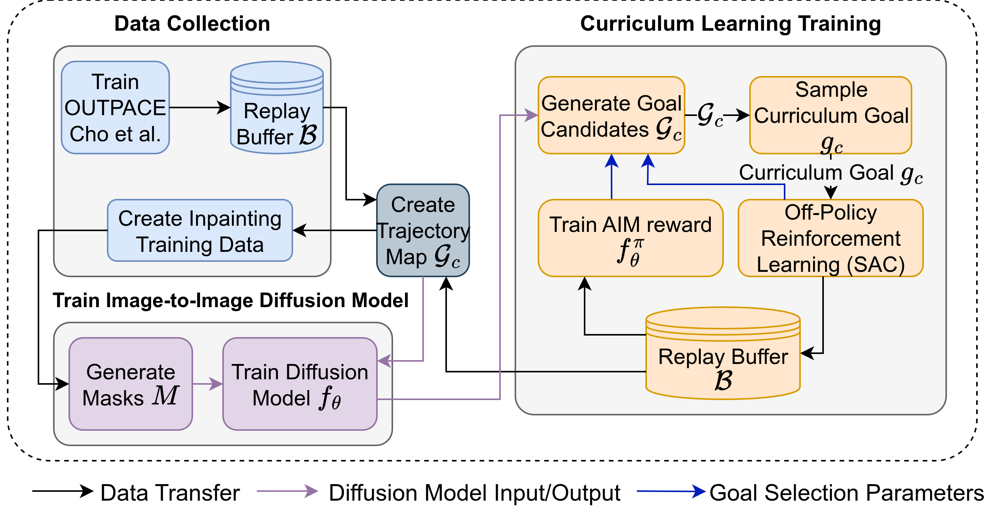
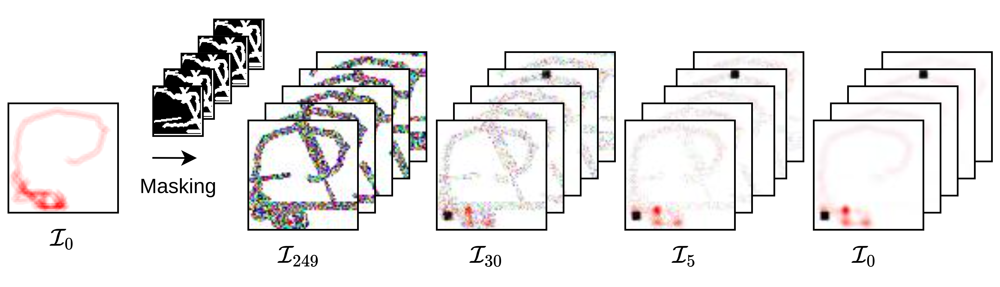
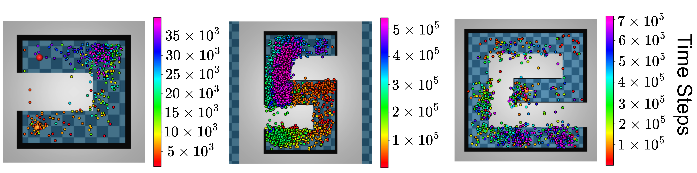

Curriculum reinforcement learning (CRL) aims to accelerate agent learning by organizing tasks into a sequence of progressively harder challenges. However, many existing CRL methods struggle to steer agents toward meaningful exploration targets, especially when domain knowledge or hand-tuned heuristics are limited or unavailable.
To overcome this limitation, we introduce PIDCRL, a diffusion-based CRL framework that leverages a mask-conditional, image-to-image pretrained diffusion model (Palette) to automatically generate curriculum goals from agent trajectory heatmaps. Given a heatmap trajectory as input, the model produces candidate curriculum goals, which are subsequently filtered and selected using several strategies, including spatial averaging, $Q$-value scoring, and a trainable reward-based mechanism.
These strategies identify curriculum goals that are both achievable from the current trajectory and appropriately challenging, enabling effective curricula without requiring expert-designed heuristics. Across three maze environments (PointUMaze, PointNMaze, PointSpiralMaze), PIDCRL matches or outperforms ten state-of-the-art CRL baselines.
Repurposes Palette image-to-image conditional diffusion to in-paint prospective goal locations directly onto visual agent trajectory heatmaps.
Introduces $Q$-value scoring, spatial averaging, and trainable adversarial intrinsic motivation (AIM) filtering to pick frontier goals that avoid exploration traps.
Outperforms 10 state-of-the-art CRL baselines (including OUTPACE, GoalGAN, HGG, CURROT, and GRADIENT) across PointUMaze, PointNMaze, and PointSpiralMaze.
Instead of operating in low-dimensional Euclidean coordinate space where obstacle topology is neglected, PIDCRL maps trajectories into 2D continuous density heatmaps. A binary mask isolates the region to be inpainted by the conditional diffusion network:

As the policy evolves, the diffusion inpainter smoothly extends goals along reachable topological corridors, preventing goals from being placed behind insurmountable walls.

We evaluated PIDCRL against a comprehensive suite of ten established CRL algorithms across 5 random seeds:
Full PyTorch implementation, training scripts, MuJoCo environments, high-resolution plots, and supplementary analyses:
View GitHub Repository (farukoruc/DiffusionOutpace)If you find PIDCRL or this codebase useful for your research, please cite our IEEE WCCI 2026 paper:
@inproceedings{oruc2026palette,
title = {Palette Inpainting Diffusion Curriculum Reinforcement Learning ({PIDCRL})},
author = {Oru{\c{c}}, Faruk and Sayar, Erdi and Iacca, Giovanni and Knoll, Alois and Kayacan, Erdal},
booktitle = {IEEE World Congress on Computational Intelligence (WCCI)},
year = {2026},
publisher = {IEEE}
}